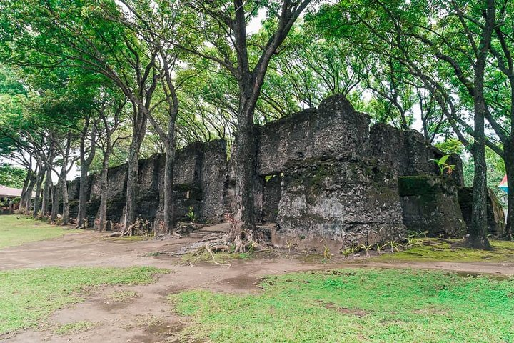
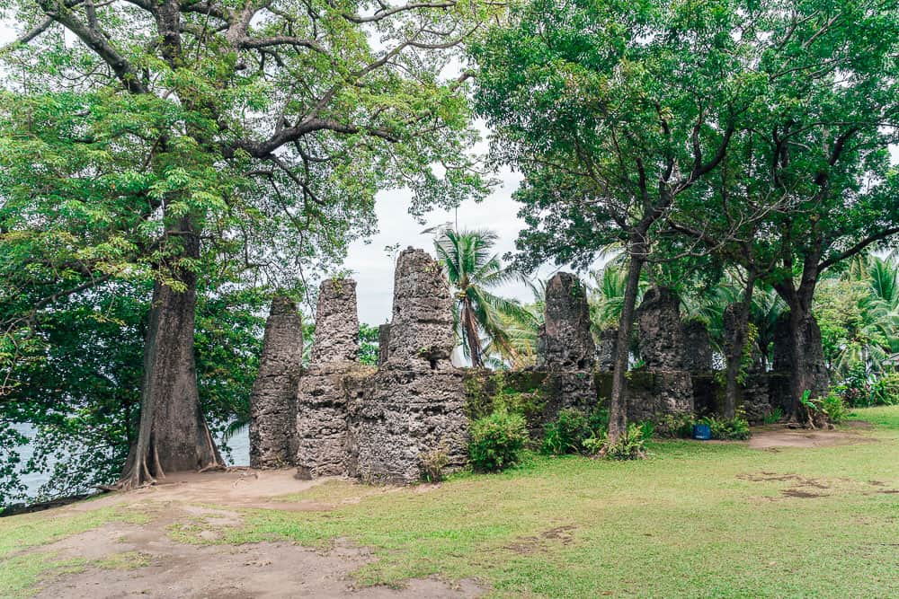
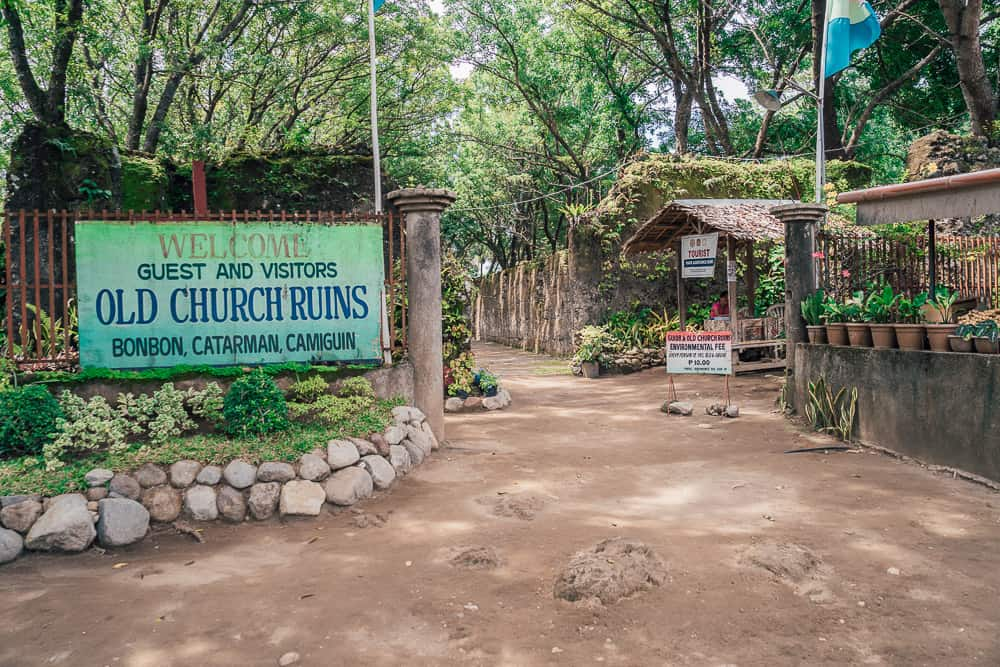

Ruins of the Old Spanish Church of Bonbon, Camiguin
A historic Spanish-era church ruin located in Catarman, Camiguin.

About the Ruins
The Ruins of the Old Spanish Church of Bonbon are historical remains of a Spanish-era church located in Catarman, Camiguin.
The church was partially destroyed during the eruption of Mount Vulcan in the 1870s. The volcanic activity caused massive destruction in the surrounding town and forced residents to relocate.
Today, the ruins stand as a reminder of Camiguin’s rich history and Spanish colonial heritage. Visitors often explore the site to see the old stone structures and learn about the island’s past.
Things to Do
- Explore the historic stone ruins
- Take photos of the old Spanish architecture
- Learn about Camiguin’s volcanic history
- Visit nearby historical landmarks
Travel Information
How to Get There
The ruins are located in Catarman, Camiguin. Visitors can reach the site by public transportation, motorcycle rentals, or guided tours around the island.
Best Time to Visit
The best time to visit is during the morning or late afternoon when the weather is cooler and the lighting is ideal for photographs.
Before You Go
- Bring a camera for photos
- Wear comfortable walking shoes
- Bring water and sun protection
Gallery



Discover More of Camiguin